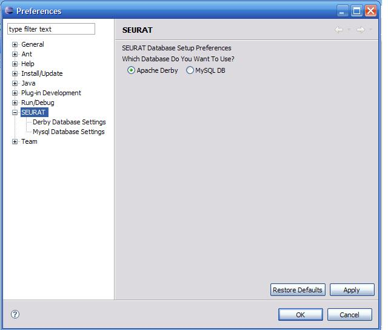
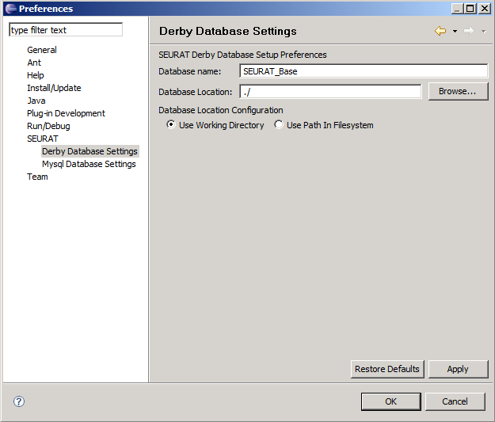
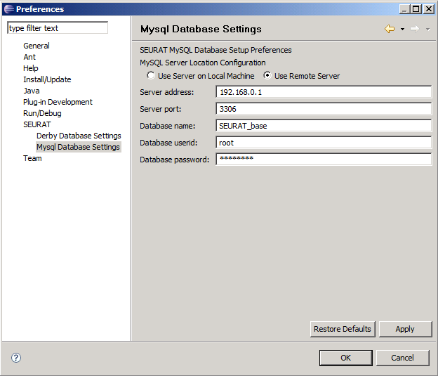

SEURAT comes preconfigured to use the built in Derby DBMS. It is possible at any time to reconfigure SEURAT to take advantage of other databases, or potentially to create a new database alongside others.

The Database Selection radio buttons control which DBMS will be used for data storage. The subpages on the left-hand side of the screen are used to configure the settings for each of the available database types.
SEURAT will automatically load the database with the new settings if you change the database type or the database name in the preference pages.

The database name used by the Derby database engine is stored separately from the MySQL database name. It is not necessary to specify a new database name if you are only working on one project. Database name selection is provided to support cases in which rationale for multiple projects must be managed and maintained by the user.
The database location field is only applied if the 'Use Path In Filesystem' radio button is selected. It can be used to force SEURAT to read a database from any location available from the local filesystem, including network shares and removable media.
The Database Location Configuration radio buttons determine how the SEURAT database should be created and accessed. If the 'Use Working Directory' radio button is chosen, SEURAT will search for the database in the Eclipse directory. If the 'Use Path in Filesystem' radio button is selected, the database location path specified above will be used as the parent folder of the database.
SEURAT has been configured to automatically create a new database if one cannot be found at the specified path. Be sure to verify the database name and location settings when reconfiguring SEURAT to connect to an existing rationale database.

The database server address and port are necessary for connecting to a remote MySQL server. If the "Use Server on Local Machine" radio button is selected instead, these fields will not be used.
The database name is used to specify the database to connect to on the MySQL server.
Database userid and password must be the username and password of an account on the MySQL server with both read and write access to that database. It is possible that the Rationale Explorer can still function and allow the viewing of information with a read-only account, but this functionality is not supported or recommended.
Note:
If you are using a version of MySQL that is older than 5.0, you will need to use an account that does not have a password.
Otherwise, any account will suffice as long as it has CREATE, DELETE, INSERT, SELECT, and UPDATE privileges.